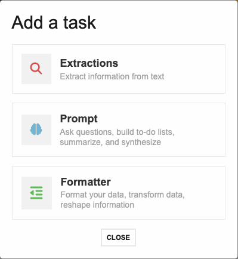
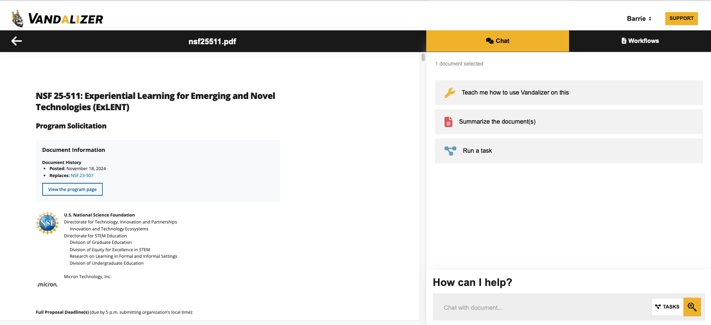
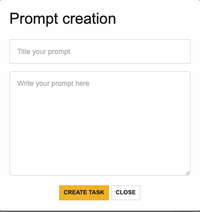
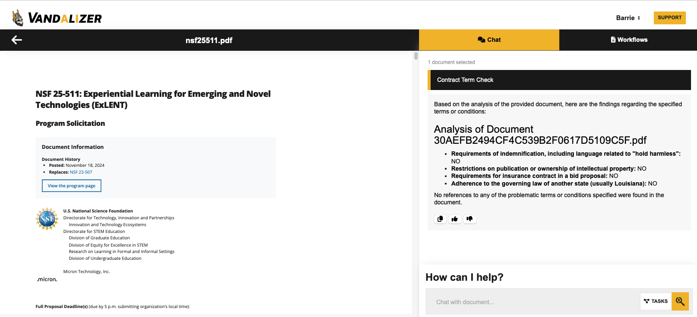
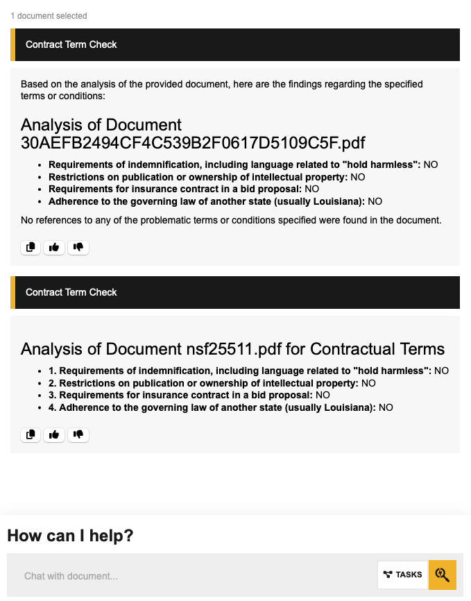
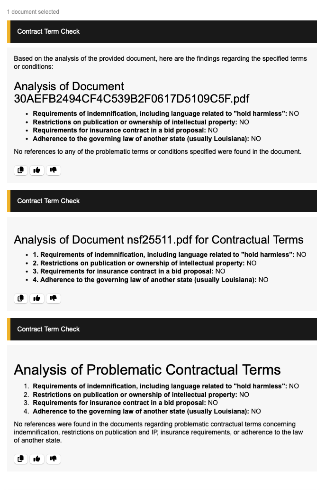

VANDALIZER 2.0
This post is intended to demonstrate the current process for creating a new Task in Vandalizer 2.0. We are currently testing this version of Vandalizer before deploying it to production. My goal is to create a simple (I hope) TASK in Vandalizer that is part of the PreAward workflow here at the UI. Ultimately, I’d like this task to be incorporated into a WORKFLOW, in which many related tasks are performed in sequence.
TASKS
The new version of the Vandalizer is built on Tasks, which are specific actions that we want an AI model to perform. We currently group the tasks into three categories, Extraction, Prompts, and Format. Below is a screenshot of the menu related to creating a new task.

More types of tasks are in development, but a tremendous amount of research administration relies on extracting information from documents, summarizing or synthesizing that information, and formatting the results for downstream consumers.
VANDALIZER INTERFACE
Logging In
When you navigate to the Vandalizer in your internet browser, you will see this screen.
You will have to authenticate with your University of Idaho credentials, and you must be on the UI network or using the UI VPN.
Upload a Document
I’ll save a detailed interface tutorial for a different post. For now, I can drag and drop this NSF FOA pdf into the window, and I will then see the file open in the viewer pane. Epic! I can always click the left pointing arrow just below Joe Vandal’s head to navigate back to the file explorer view.

MY TASK: LOOK FOR PROBLEMATIC CONTRACTUAL TERMS
For every proposal, our PreAward team must review the FOA (or RFP, or RFA, or whatever…) to determine if the funding program has any contractual terms to which the UI cannot agree. These include:
- Requirements of indemnification or language related to “hold harmless”.
- Restrictions on publications or intellectual property ownership.
- Requirements for insurance contract in a bid proposal.
- Adherence to the governing law of another state (usually Louisiana).
Wouldn’t it be great if an LLM could ACCURATELY, REPRODUCIBLY, and SECURELY perform this task on this 22 page pdf? Of course it would! That was a rhetorical question!
Let’s try to build a new task in Vandalizer, and test it out!
NEW TASK
I can click on the “TASKS” button in the lower right of the screen to bring up the list of existing tasks and big orange (or pride gold?) ” + NEW TASK ” button at the bottom. Click on that and you get the dialogue I showed you above. For this task, I’m choosing “Prompt”. You’ll see the foloowing dialogue box:

I’m going to title my Prompt Task Contract Term Check. The really important part is what you put in the prompt box.
PROMPT ENGINEERING
The key here is to be specific, provide appropriate context for the task, and provide guidance related to the structure and content of the response. Think of it like you are giving instructions to a very smart but very inexperienced undergraduate intern. Here is my first attempt at a prompt for this task:
This text is from a Funding Opportunity Announcement or related type of document. I need to analyze the text to determine if there are any problematic contractual terms with which my institution cannot comply. Please analyze the text for any reference to the following terms or conditions:
- Requirements of indemnification, including language related to “hold harmless”.
- Restrictions on publication or ownership of intellectual property.
- Requirements for insurance contract in a bid proposal.
- Adherence to the governing law of another state (usually Louisiana).
For each of these items, respond with a “NO” if you do not find reference to that item, and a “YES” if you find reference to that item. If your response is “YES”, provide an explanation that will help me locate the potentially problematic sections for further review.
Once you click Done you should see your new task in the task list under Prompt. Just click on the task and it will submit it to the LLM!
RESULTS
Result 1
Here is a screenshot of our first result, which took less than 15 seconds.

It’s…. weird. The correct result in this case is “NO” to all four categories, and this is what we are getting. This whole “Analysis of Document…” with a nonsense string file name though…. I have no idea where that came from.
Let’s run the task again without any changes (just clicking on the task again will do this). What do you think will happen? What do you think should happen?
Result 2
Here is a screenshot of the expanded chat window.

What do you notice? We are still getting the same answers (Yay!), but the formatting of the result is a little different. At least it references the correct file name this time. Let’s do one more replicate of the task with no changes….
Result 3
Here is a screenshot of all three results in the chat interface.

The answers are still correct, but once again the formatting and information content of the response is a little different.
EVALUATION
We’ve created a new Vandalizer task that SEEMS to provide us the correct answers, even though the structure and content of the response varies. Is this good enough? Are we done? Are we ready to turn over this legally fraught and high risk task to the Vandalizer, saving hundreds to thousands of person hours per year?
NO FUCKING WAY!
In my next post, I’ll introduce the idea of testing for ACCURACY, one of the foundational principles of AI4RA.
Happy Vandalizing!
Barrie